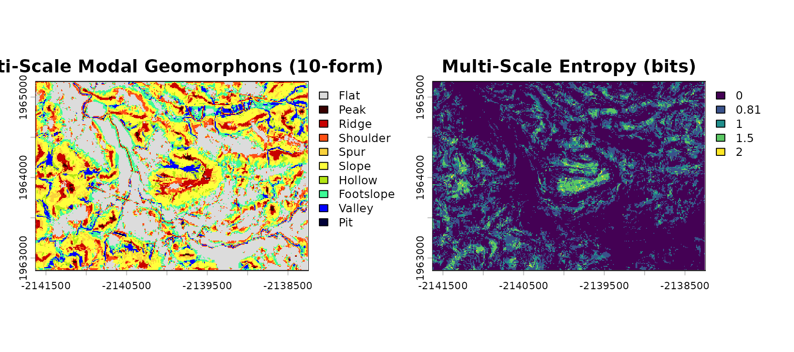
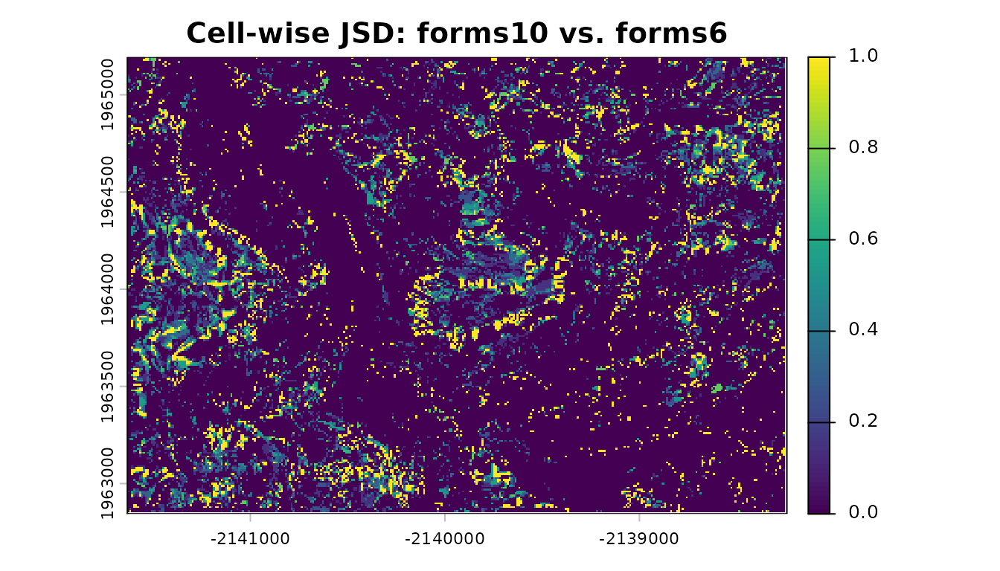
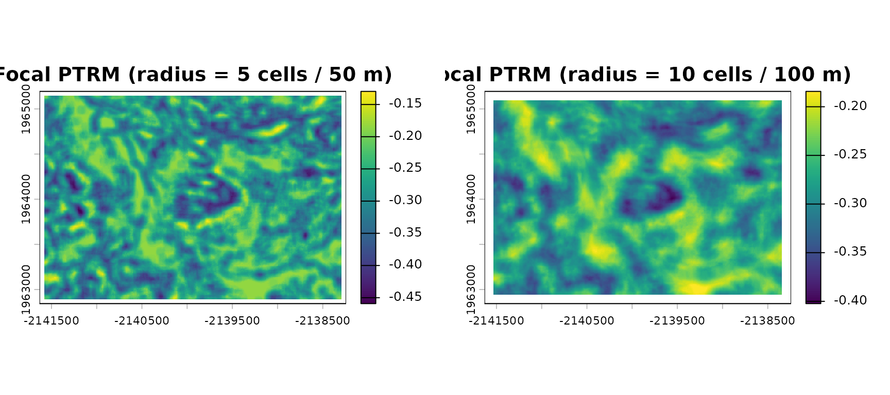
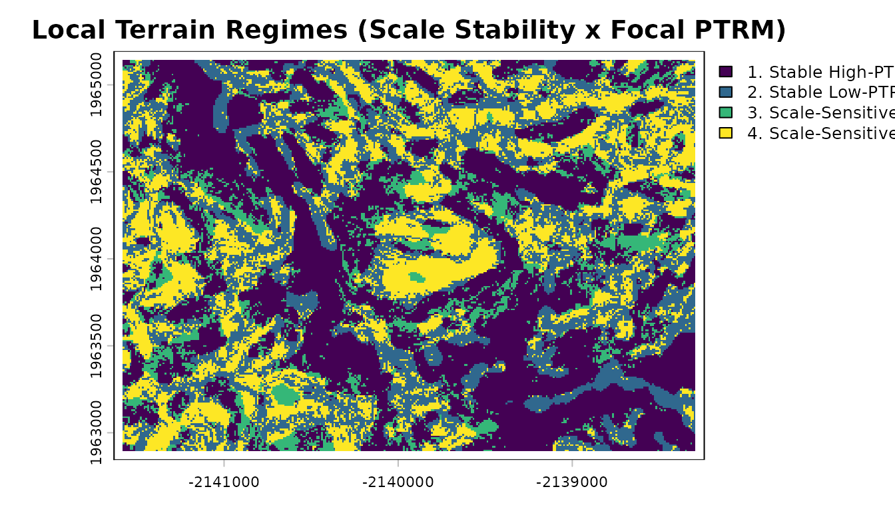

Multi-Scale Ensembles and Terrain Realism (PTRM) with 'rgeomorphon'
Source:vignettes/ensembles-and-ptrm.Rmd
ensembles-and-ptrm.RmdWhen you have a DEM but no external thematic map, you still need to
know where landforms are stable across scales, where simplified
taxonomies lose detail, and how terrain complexity varies across space.
rgeomorphon supports this reference-free workflow with four
tools:
-
geomorphon_sweep()runs a parameter grid across multiple form taxonomies in one ray-tracing pass per parameter tuple. -
geomorphon_ensemble()summarizes a sweep into modal consensus classes or per-class proportion stacks. -
geomorphon_divergence()maps cell-wise base-2 Jensen-Shannon divergence (JSD) between two proportion ensembles. -
geomorphon_ptrm()andgeomorphon_ptrm_focal()compute the Perceived Terrain Realism Metric (PTRM; Rajasekaran et al., 2022) globally or inside a circular moving window.
This vignette demonstrates how multi-scale ensembles and focal PTRM
complement each other on the scorpion DEM.
1. Setup
Load the 10 m scorpion DEM (EPSG:5070):
data("scorpion", package = "rgeomorphon")
dem <- terra::rast(scorpion$dem)
terra::crs(dem) <- attr(scorpion, "crs")
terra::ext(dem) <- attr(scorpion, "extent")
names(dem) <- "Elevation (m)"2. Multi-Scale Sweep and Ensembles
A single search radius locks the classification to one
spatial scale. Sweeping search = c(5, 10, 15, 25) (50 m to
250 m at 10 m resolution) captures both fine gullies and broad
hillslopes:
scale_grid <- data.frame(
search = c(5, 10, 15, 25),
skip = 0,
flat_angle_deg = 2
)
sw <- geomorphon_sweep(
dem,
param_grid = scale_grid,
forms = c("forms10", "forms6")
)geomorphon_ensemble() aggregates the four scales into
either a deterministic modal class (method = "modal") or
per-class proportions (method = "proportions"). From the
proportion stack, we can compute per-cell scale agreement (maximum class
proportion across scales) and Shannon entropy:
ens_mode10 <- geomorphon_ensemble(sw, form = "forms10", method = "modal")
ens_prop10 <- geomorphon_ensemble(sw, form = "forms10", method = "proportions")
ens_prop6 <- geomorphon_ensemble(sw, form = "forms6", method = "proportions")
# Scale agreement: 1.0 means all 4 search radii assign the same class
agreement <- terra::app(ens_prop10, max, na.rm = TRUE)
names(agreement) <- "Scale Agreement"
# Shannon entropy (base 2): 0 means unanimous across scales
entropy <- terra::app(ens_prop10, function(p) {
p <- p[!is.na(p) & p > 0]
if (length(p) == 0L) return(NA_real_)
-sum(p * log2(p))
})
names(entropy) <- "Scale Entropy (bits)"
par(mfrow = c(1, 2))
terra::plot(ens_mode10, main = "Multi-Scale Modal Geomorphons (10-form)")
terra::plot(entropy, main = "Multi-Scale Entropy (bits)")
Cells with agreement == 1 (zero entropy) keep the same
landform label from 50 m to 250 m. High-entropy bands trace
scale-sensitive transitions along footslopes, shoulders, and undulating
micro-relief.
3. Comparing Taxonomies (geomorphon_divergence)
geomorphon_divergence() compares two proportion
ensembles cell by cell using base-2 JSD (bounded in
).
Comparing forms10 against forms6 shows exactly
where the reduced taxonomy drops micro-relief classes (spurs, hollows,
peaks, depressions):
div <- geomorphon_divergence(ens_prop10, ens_prop6)
data.frame(
mean = round(div$mean_divergence, 4),
median = round(div$median_divergence, 4),
q90 = round(div$q90_divergence, 4),
n_cells = div$n_cells
)## mean median q90 n_cells
## 1 0.1107 0 0.5488 79092
terra::plot(div$raster, main = "Cell-wise JSD: forms10 vs. forms6")
Over half of scorpion has zero divergence between
forms10 and forms6, while the top 10% of cells
diverge sharply (q90 > 0.5).
4. Global and Focal PTRM
geomorphon_ptrm() implements the perceptual terrain
realism model of Rajasekaran et al. (2022):
where , , is the proportion of valid cells in landform class , and are the empirical weights from the paper. PTRM is a perceptual complexity metric, not a thematic accuracy score. Do not use it as a calibration target for soil or ecological maps.
Compute global PTRM across all four form taxonomies (reduced taxonomies automatically average the 10-form weights over their reachable lookup-table cells):
form_systems <- c("forms10", "forms6", "forms5", "forms4")
ptrm_by_system <- vapply(
form_systems,
function(f) {
geomorphon_ptrm(
dem,
mode = "dem",
search = 10,
skip = 0,
flat_angle_deg = 2,
forms = f
)$ptrm_score
},
numeric(1)
)
round(ptrm_by_system, 4)## forms10 forms6 forms5 forms4
## -0.2762 -0.2918 -0.2934 -0.2938geomorphon_ptrm_focal() evaluates the same equation
inside a circular moving window of radius cells around each
pixel. Passing the modal ensemble ens_mode10 with
mode = "class" avoids recomputing geomorphons:
p_r5 <- geomorphon_ptrm_focal(ens_mode10, radius = 5, mode = "class")
p_r10 <- geomorphon_ptrm_focal(ens_mode10, radius = 10, mode = "class")
par(mfrow = c(1, 2))
terra::plot(p_r5, main = "Focal PTRM (radius = 5 cells / 50 m)")
terra::plot(p_r10, main = "Focal PTRM (radius = 10 cells / 100 m)")
Smaller radii highlight narrow gullies and ridge crests; larger radii smooth over individual hillslope facets to outline the main erosional remnant.
5. Combining Scale Stability and Focal PTRM
Focal PTRM and multi-scale ensemble entropy measure different terrain
properties. On scorpion, their correlation is modest
(,
):
vals <- terra::values(c(p_r5, entropy, agreement), mat = TRUE)
ok <- stats::complete.cases(vals)
round(stats::cor(vals[ok, 1], vals[ok, 2]), 4)## [1] -0.3681Crossing scale stability (agreement == 1
vs. < 1) with focal PTRM (split at its median)
partitions the landscape into four local terrain regimes:
med_ptrm <- stats::median(vals[ok, 1])
regime_code <- ifelse(
vals[, 3] == 1 & vals[, 1] >= med_ptrm, 1L,
ifelse(
vals[, 3] == 1 & vals[, 1] < med_ptrm, 2L,
ifelse(vals[, 1] >= med_ptrm, 3L, 4L)
)
)
regimes <- terra::rast(p_r5)
terra::values(regimes) <- regime_code
levels(regimes) <- data.frame(
id = 1:4,
regime = c(
"1. Stable High-PTRM (flats & uniform slopes)",
"2. Stable Low-PTRM (persistent ridges & valleys)",
"3. Scale-Sensitive High-PTRM (slope transitions)",
"4. Scale-Sensitive Low-PTRM (dissected micro-relief)"
)
)
tab <- table(regime_code[ok])
data.frame(
Regime = levels(regimes)[[1]]$regime,
Cells = as.integer(tab),
Share_pct = round(100 * as.numeric(tab) / sum(tab), 1)
)## Regime Cells Share_pct
## 1 1. Stable High-PTRM (flats & uniform slopes) 29207 39.5
## 2 2. Stable Low-PTRM (persistent ridges & valleys) 19184 25.9
## 3 3. Scale-Sensitive High-PTRM (slope transitions) 7806 10.5
## 4 4. Scale-Sensitive Low-PTRM (dissected micro-relief) 17828 24.1
terra::plot(regimes, main = "Local Terrain Regimes (Scale Stability x Focal PTRM)")
This combination separates persistent macro-landforms (regimes 1 and 2) from scale-dependent transition zones and dissected micro-relief (regimes 3 and 4) using only the DEM.
References
- Jasiewicz, J., & Stepinski, T. (2013). Geomorphons — a pattern recognition approach to classification and mapping of landforms. Geomorphology, 182, 147–156. https://doi.org/10.1016/j.geomorph.2012.11.005
- Rajasekaran, S. D., Kang, H., Čadík, M., Galin, E., Guérin, E., Peytavie, A., Slavík, P., & Mech, R. (2022). PTRM: Perceived Terrain Realism Metric. ACM Transactions on Applied Perception, 19(2), Article 5. https://doi.org/10.1145/3514244